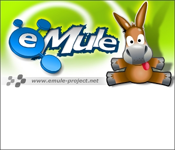

Bounded broadband slots
Uses a configured upload budget and target slot count instead of letting slot count drift toward legacy high-slot behavior on fast links.

eMule broadband edition eMule BBClassic eMule, tuned for modern broadband
A power-user eMule for fast upload links, large shared libraries, always-on Windows sessions, and local controller workflows without abandoning the familiar desktop app.
eMule broadband edition, compactly eMule BB, is an independent product line for people who still value eMule's distributed sharing model. It preserves the classic workflows while making the client easier to run, observe, automate, and validate on current Windows systems.
Feature list
Uses a configured upload budget and target slot count instead of letting slot count drift toward legacy high-slot behavior on fast links.
Detects slow or stuck uploaders after warm-up, requeues them with cooldown, and gives waiting clients a cleaner chance to fill the pipe.
Adds all-time and session ratio readouts, low-ratio file boost controls, and optional LowID score deboosting for stricter seeders.
Focuses on recursive share sync, startup cache behavior, long-path Windows libraries, stable sorting, and responsive large collections.
Keeps stock protocol compatibility, server and Kad search modes, shared files, upload queues, categories, known clients, and desktop control as the product foundation.
Improves persistence, shutdown behavior, WebServer validation, background worker lifetime, and error paths that matter in always-on sessions.
Exposes authenticated JSON endpoints for transfers, searches, shared files, servers, Kad, status, logs, categories, and controlled shutdown.
Targets practical local integration: search, add, observe, and manage eMule from companion tools while the native app remains in charge.
Uses native tests, Python harnesses, UI automation, REST smoke checks, live eD2K/Kad scenarios, and controller integration gates.
Product guide
Start with the familiar eMule model: connect to trusted servers, bootstrap Kad, search by server/global/Kad mode, organize categories, and keep your shared directories deliberate.
Set a finite upload limit, choose a realistic maximum upload client count, and let the broadband policy favor fewer stronger slots over hundreds of low-rate legacy-style sessions.
Use long-path capable Windows setups, keep share roots clean, let recursive share sync and startup cache work for you, and watch the ratio columns when curating rare files.
Enable the WebServer/REST surface only for trusted networks, use the API key, and connect tools that can respect native eMule search, transfer, and delete semantics.
Treat the public branch as active pre-release work until the Release 1 gates are complete. Follow the build, test, and live E2E evidence before calling a package production-ready.
Controller surface
The broadband release track exposes a resource-oriented
/api/v1 JSON API from the existing WebServer listener.
It authenticates with X-API-Key, serves JSON envelopes,
and keeps native eMule state changes marshaled through the app.
Release posture
Release 1.0 stabilization is tracked publicly, with broadband work landing through reviewed app, test, build, and tooling repos.
Release gates include native tests, REST contract checks, malformed request coverage, UI automation, live eD2K/Kad scenarios, and aMuTorrent/Arr validation.
Stock eD2K/Kad behavior remains the default. Broadband, REST, and controller features are added around that compatibility goal.
Public workspace